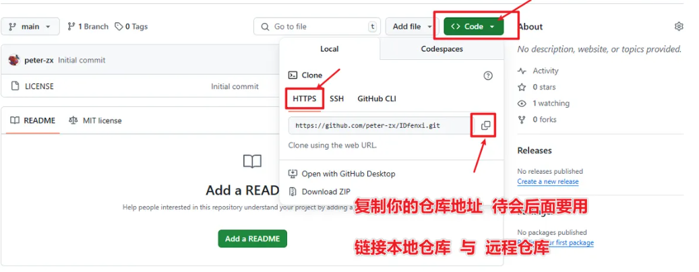
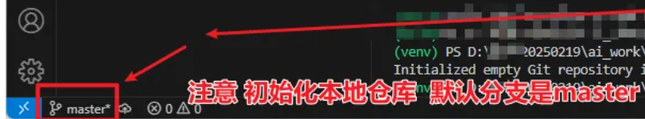
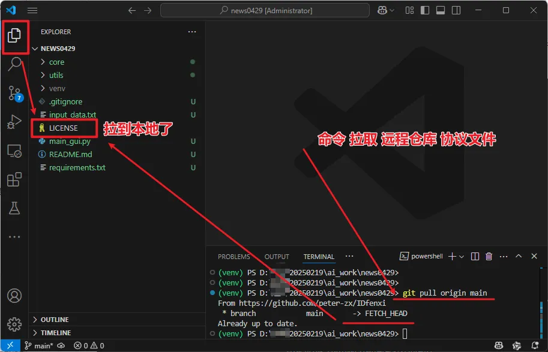

第一步：在 GitHub 上创建新的远程仓库
- 打开你的 GitHub 网站，创建新的仓库，填写仓库名称、描述等信息。
- 创建时不要勾选
Add a README file；开源协议随便选一个就行。- 创建好的仓库页面，其中包含了远程仓库的 URL。复制这个 URL，我们稍后会用到。

第二步：在本地项目中初始化 Git
- 打开 VS Code，导航到你的本地项目文件夹
- 创建并编辑
.gitignore文件，一个常见的 Python 项目.gitignore示例如下
1 2 3 4 5venv/ __pycache__/ *.pyc *.log *.DS_Store
- 运行
git init初始化本地 Git 仓库，这会在你的项目目录下创建一个.git文件夹。本地仓库初始化后，默认的初始分支名称通常是master。

第三步：链接本地仓库和远程仓库
- 在 VS Code 的终端中，运行以下命令，将你的 GitHub 仓库 URL 添加为远程仓库
origin（即上面复制的仓库URL）
1git remote add origin https://github.com/peter-zx/IDfenxi.git
第四步：修改本地仓库名称 (如果需要)
- GitHub 新创建的仓库默认分支名称通常是
main，而本地git init后的默认分支可能是master（如上图所示）。为了保持一致，推荐修改本地分支名称。- 在 VS Code 的终端中运行，这会将你的本地
master分支重命名为main。如果你本地仓库已经是main，则跳过此步骤
1git branch -M main
第五步：拉取远程仓库内容到本地（可选）
- 由于远程仓库可能包含 README、LICENSE 等文件，我们需要先将其拉取到本地，以避免推送时的冲突。
- 打开 VS Code 的终端，运行以下命令来拉取远程
origin的main分支内容到你的本地main分支
1git pull origin main这个命令会将远程
origin/main分支的更改合并到你当前的本地main分支。如果这是第一次拉取，它会下载远程仓库的文件。
第六步：暂存和提交你的本地代码
1 2 3 4 5 6 7 8 9 10git init git add . git commit -m "xxx" git pull origin main #一般在这个时候执行（如果本地和github远程cang'ku） # 第一次推送 git push -u origin main # 后续推送 git push
第七步：补充文件
- 补充项目的
requirement.text文件。
- 使用第三方库
pipreqs生成项目的requirements.txt文件，pipreqs会分析项目中的 Python 源代码文件，找出所有依赖的包，并将它们及其版本写入requirements.txt文件。pipreqs可以只将用到的库生成到requirements.txt文件。
1 2 3 4 5 6 7 8# 先安装pipreqs库 pip install pipreqs # 生成requirements.txt,在当前项目根目录使用pipreqs命令 pipreqs ./ --encoding=utf8 --force # 一键安装项目需要的库 pip install -r requirements.txt
- 补充
README.md文件
- 一般包含：项目介绍、项目结构树形图、操作步骤等
创建独立分支
如果想创建独立分支，方便随时切换查看两个版本，可以创建独立分支。
首先要确保上述的流程执行过，已经存在有main分支。
1 2 3 4 5 6 7 8 9 10# 查看当前分支（应该是 main） git branch # 创建并切换到 v2（可以自定义命名） 分支 git checkout -b v2 # 在 v2 分支上提交你的升级代码 git add . git commit -m "升级至 v2 版本" git push origin v2这时候处于
v2分支，当前在哪个分支，git push就推送到哪个版本。